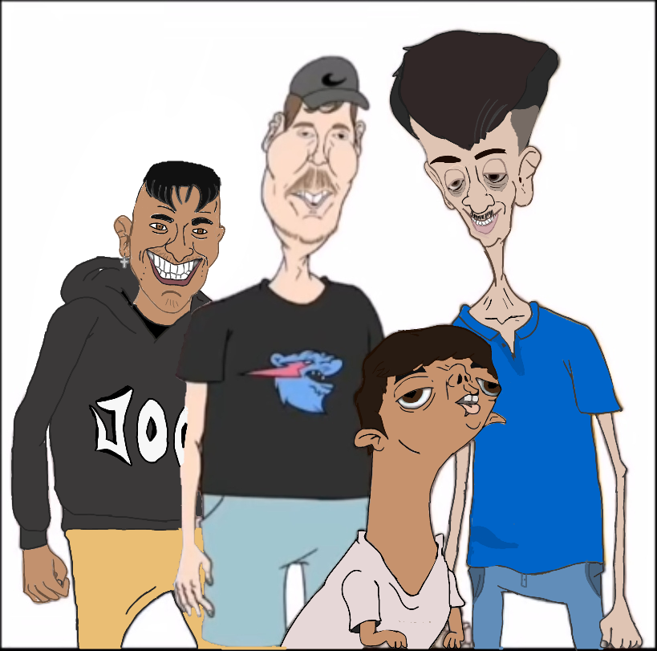

Bienvenidos a Legión Yulex
El lugar donde las preguntas sobran y las ideas se conectan
Preguntas recientes:

¿De qué color son los osos polares?
El oso polar tiene pelaje blanco para que pueda camuflarse en su entorno. Su pelaje está tan bien adaptado para los ambientes árticos que a veces puede confundirse con un montón de nieve.
Por Yulex | Hace 5 horas